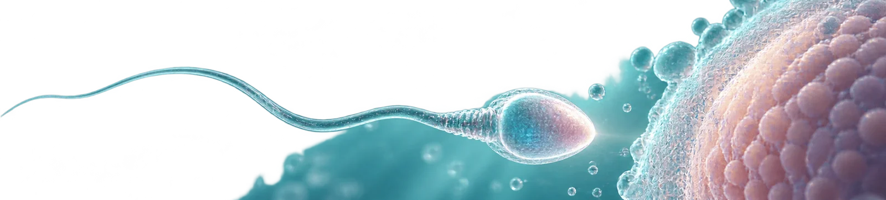

정자 기증
정밀 검사를 통해
검체와 건강검진 결과를 확인합니다.기증 전후 검사를 거쳐 사용 가능한 검체인지 확인합니다.

열 가지 혈액검사 결과를 살펴
사용 가능한 정자인지 판단합니다.
기증하는 분과 사용하는 부부에게 필요한 절차를 구분해 설명합니다.
재검사를 확인한 뒤 식별번호로 관리하며 서로의 신원을 제공하지 않습니다.
건강 상태와 정밀검사 소견을 검토해
기증 여부를 결정합니다
봄날은 남성 요인으로 임신이 어려운 부부의 진료를 위해
정자 기증에 참여할 분을 안내합니다.
다음 조건을 확인하고 필요한 검사에 동의한 뒤 기증을 검토합니다.봄날에서는 남성 요인으로 임신이 어려운 부부의 보조생식 진료에 사용할 정자 기증을 상담하고 있습니다.
다음 조건을 확인하고 필요한 검사에 동의한 뒤 기증을 검토합니다.
기증자 자격
-
기증 절차에 필요한 개인 정보에 대해
수집과 이용 내용을 확인하고 동의한 분기증 절차에서 사용하는 개인 정보의 항목과 이용 목적에 동의한 분 -
기증하기 전 건강검진을 받아야 하며,
전염성 질환을 확인하여
정액으로 전파될 수 있는 질환이 검사에서 확인되지 않은 남성기증에 앞서 건강검사를 받는 데 동의하고 정액을 통해 전파되는 질환에 관한 검사 조건을 충족한 분 -
정액검사 소견에서 기증 기준에
해당하는 것으로 확인된 남성채취한 정액의 수와 운동성 등에서 기증에 필요한 조건을 충족한 분 -
본인과 가족의 병력 및 지난 치료 이력을 검토해
검사와 상담에서 기증이 어려운 사유가 확인되지 않은 분본인과 가족의 질환 이력 및 과거 치료 내용을 확인했을 때 기증에 제한되는 사유가 없는 분 -
기증 정자를 이용해 태어난 아이에 대해
친자관계를 요구하지 않는다는 내용을 확인하고 동의한 분기증 뒤 태어난 아이에 관해 친자관계를 주장하지 않는다는 설명을 듣고 해당 동의 내용을 확인한 분 -
정자은행이 수증자를 정한다는 점과,
수증자의 신원을 확인할 수 있는 내용은
전달되지 않는다는 설명에 동의한 분검체를 사용할 수증자는 정자은행에서 정하고, 기증자에게 수증자의 신원을 알리는 자료가 제공되지 않는다는 점에 동의한 분
기증 절차
전화 예약
방문 이틀 전부터 금욕 기간 유지방문 2일
전부터 금욕
기본 정액검사
자발적 참여 단계이며 실비 보상은 없습니다참여 의사를 확인하는 단계로,
실비 보상 없음
혈액검사와 첫 번째 검체 기증
배우자 동의가 필요한 경우 서면으로 확인하고 면담 후 기증을 진행합니다.
이후 단계의 실비 보상 안내해당하는 경우 배우자의 서면 동의를 받고,
약 30분의 면담을 거쳐 기증합니다.
이후 단계의 실비 보상 안내
2차 기증
혈액검사에서 기증 가능 여부 확인 후 진행혈액검사 결과가 기증 기준에 해당하면
진행
혼인관계와 의학적 필요성을
확인한 뒤 이용 절차를 안내합니다법률혼 부부,
검사에서 사용 사유를 확인한 뒤 절차를 안내합니다
봄날에 보관 중인 기증 검체의 사용을 상담하는
기증 정자 사용을 상담할 부부의 기준입니다.보관된 기증 정자를 사용하려는 부부는 다음의 대상 조건과 의학적 사유를 확인한 뒤 상담을 진행합니다.
수증자 자격
-
법적인 혼인관계를 확인할 수 있는
부부가 상담 대상입니다
(가족관계와 혼인관계를 확인하는 증명서 지참)법률혼 부부의 사용을 상담합니다. 가족 및 혼인관계를 확인할 수 있는 증빙 서류를 제출해 주세요. - 검사에서 회복이 어려운 무정자증으로 판단한 경우검사에서 회복이 어려운 무정자증으로 판단한 경우
-
중대한 유전성 질환이나
염색체 이상이 확인된 경우중대한 유전 질환이나 염색체 이상이 있어 상담이 필요한 경우 -
Rh 음성으로 항원에 대한 감작이 확인된 여성과
남편의 혈액형이 Rh 양성인 때여성은 Rh 음성이고 감작이 확인됐으며 배우자가 Rh 양성으로 확인된 경우 - 그 밖의 의학적 사유로 기증 정자 사용을 검토하는 경우그 밖의 의학적 사유로 기증 정자 사용을 검토하는 경우
수증 절차
자격 확인
수증자 상담
시술 방법 결정 · 신청 (보조생식술 방법 결정)
수증동의서 작성
매칭 지표 작성
최종 정자 선택
비용 지불
보조생식술 시행
안전관리 검사 항목
| 구분 | 검사 항목 |
|---|---|
| 혈액형 | ABO · Rh 분석 |
| 바이러스 | B형간염 · C형간염 항원 · 항체 |
| 성병 | 매독과 HIV 등 감염 관련 혈액검사 항목 확인 |
| 기타 | CMV 항체 · HTLV-1&2 |
사용 전 확인할 수 있는 기증 검체의 네 가지 정보
| 구분 | 기증자 정보 |
|---|---|
| 혈액정보 | 혈액형 및 B형·C형 간염과 성매개 감염 관련 검사 소견 |
| 정액검사정보 | 검체의 양과 정자의 개수 및 형태에 관한 검사 소견 |
| 인터뷰정보 | 정신·신경계 질환, 복용약과 과거 치료, 유전 질환 및 가족의 병력 |
| 신체정보 | 키와 몸무게, 체형 등 신체 자료 및 면담에서 확인한 참고 사항 |
정자 기증에 관한 질문에 봄날이 답합니다
기증 과정의 실비 보상은 언제 안내받나요?
검사와 방문에 필요한 실비의 보상 여부 및 지급 시점은 기증 상담에서 확인하실 수 있습니다. 예비 방문과 검사, 재검사 등 단계에 따라 적용 내용이 달라집니다.
방문하기 전에 온라인으로 접수하나요?
먼저 대표번호 010-4894-4905로 방문 일정을 문의해 주세요. 검사 전 금욕 기간과 준비사항을 확인해 드리며, 방문 면담에서 검사 및 기증 순서를 설명합니다.
기증 뒤 보관 중단을 요청할 수 있나요?
보관 중인 검체에 대해서는 본인 확인과 신청서 접수 후 폐기 절차를 상의할 수 있습니다. 시술에 이미 사용한 검체에는 적용할 수 없습니다.
기증자에게 수증자의 신원이 전달되나요?
재검사를 마친 검체는 식별번호로 관리합니다. 기증자에게 검체를 사용한 부부가 누구인지 알려주는 정보는 전달되지 않습니다.
검체를 사용하는 부부에게도 기증자를 특정하는 자료를 제공하지 않습니다.
검체를 사용하기 전에 어떤 자료를 보나요?
혈액형과 감염 검사 결과, 정액의 양 및 정자 수와 형태에 관한 소견, 면담에서 확인한 질환·치료·가족 이력,
키와 체중 등 신체 자료를 네 갈래로 확인할 수 있습니다. 이런 자료에서도 이름과 주소 등 기증자의 신원을 알 수 있는 항목은 제외합니다.
사용에 필요한 비용은 어떻게 안내받나요?
기증 검체의 초기 및 재검사, 정액 분석과 동결, 보관에 드는 비용을 항목별로 안내합니다. 필요한 검체의 양과 진료 내용에 따라 총액이 달라지므로 상담 때 확인해 주세요.